使用教程
学生用老师发来的精听包练习，教师从一段音频制作课程。按下面的顺序操作即可，每一步都配有当前版本的界面截图。
快速上手
先确认你是哪一种用户。两条路线用到的界面完全不同。
安装与准备
教师制作与学生练习都在 Intensive Listening 桌面应用中完成。
- Windows
- 从下载区取得安装程序，双击运行并选择安装目录，装完从开始菜单或桌面启动；首次启动会打开设置向导。
- macOS
- 下载 DMG，把应用拖入 Applications。首次打开若被系统拦截，在「系统设置 → 隐私与安全性」选择「仍要打开」；参见Apple 官方说明。
- 材料
- 人工制课至少需要一段 MP3、M4A 或 WAV 音频；试卷、答案、听力原文和已有 SRT 可帮助校对。智能体制课可附加多份 DOCX 或文字版 PDF。
- 学生
- 从教师处取得
.ilp精听包即可练习，不需要配置转写。
首次运行
首次启动会在主窗口中依次显示 8 个设置页面，从许可条款到转写接口。除许可条款外都可以先跳过，之后在「设置」里修改。
1同意许可条款
分别勾选用户协议与隐私说明，两项都勾选后「下一步」才可用。
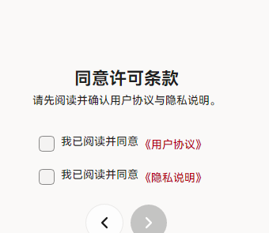
2基本设置
设置是否关联 .ilp 文件、是否开启 MCP 制作接口、是否跳过题前提示、导入音频时是否自动建立项目，以及是否发送匿名数据。建议保留「关联 .ilp 文件」，之后双击课程包就能直接打开。
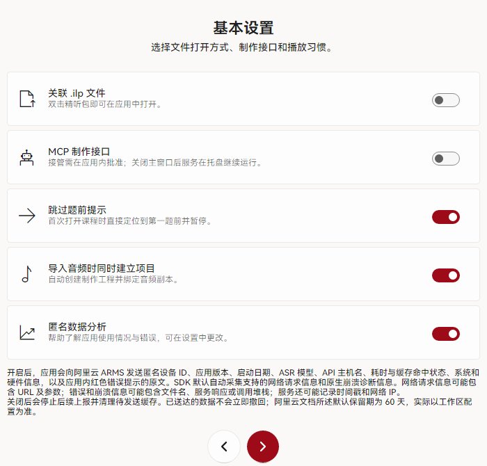
3快捷按键
给播放、上一句／下一句、上一题／下一题录制单键，翻页笔的 PageUp / PageDown 也可以。暂时不设置不影响使用。
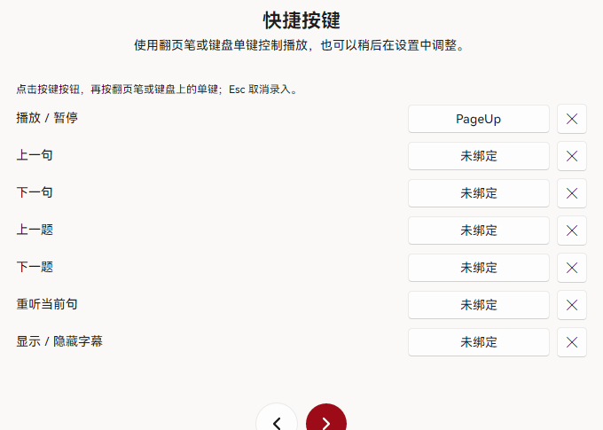
4外观与云服务
选择浅色／深色主题和字幕字号；云服务页可以直接点「暂时跳过」，登录后才有云端课程与云端转写。
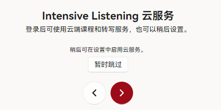
5转写接口与完成
填写阿里云百炼 API Key，或勾选「使用云服务提供的接口」；也可以留空稍后再配。最后一页点「完成设置」，进入播放页。
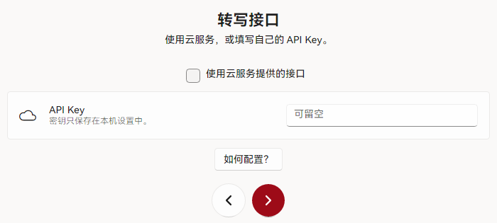
配置阿里云百炼转写
教师需要从音频自动生成字幕时，先配置自己的百炼 API Key。已有匹配的 SRT 可直接导入，不必配置。
1打开「设置 → 制作与智能体」
左侧点「设置」，在分类中选择「制作与智能体」，再点开「API 设置」。同一页下方的 MCP 开关留给智能体制作。
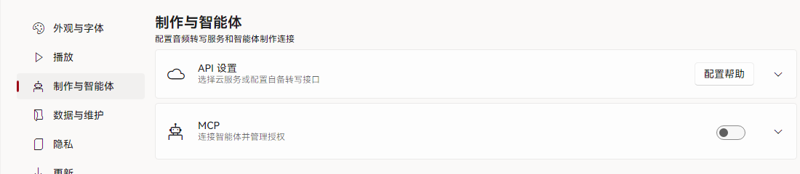
2创建 API Key 并填写
打开阿里云百炼控制台，开通服务并创建 Key。回到应用，在「API 设置」里粘贴 Key；使用北京地域时其余参数保持默认。
- Endpoint
https://dashscope.aliyuncs.com- Path
/api/v1/services/aigc/multimodal-generation/generation- Name
qwen-audio-3.0-asr-flash- Key
- 粘贴自己的百炼 API Key
- 分段并发
- 默认 10，可设置为 1–10
- 单段超时
- 默认 180 秒
点击「保存 API 配置」。使用其他地域时，先按阿里云地域说明核对接入地址与模型。
完成标志工程里可以点「开始转写」，不再提示 API 未配置。
3在任务中心查看转写
点左下角「转写任务」打开任务列表。每个任务完成后可以「载入字幕」「导出 SRT」或删除；转写期间可以继续做别的事。
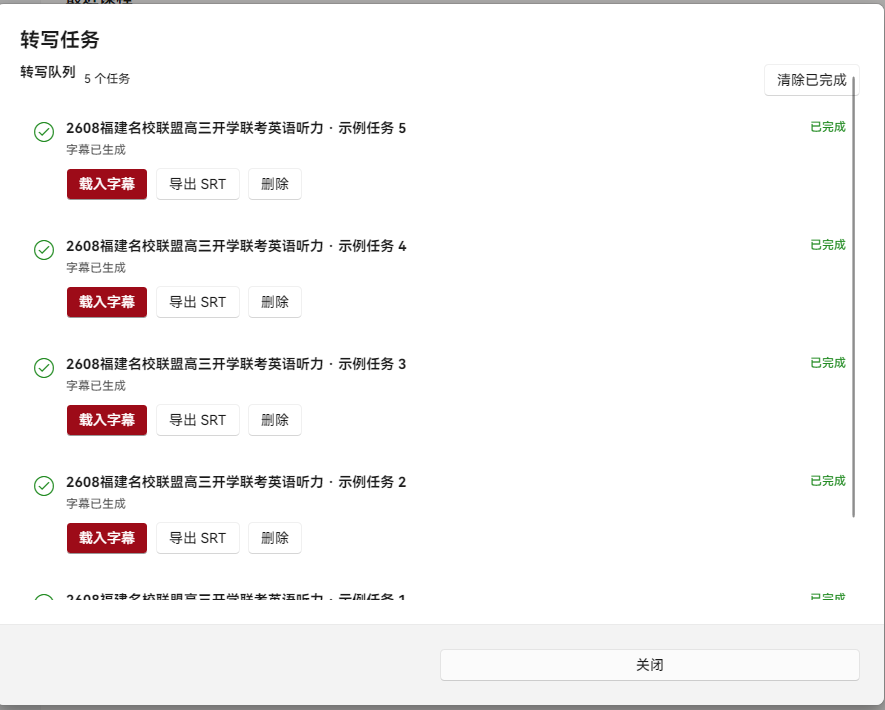
完成标志任务显示「已完成」，工程中出现逐句字幕与时间轴。
人工制课
在「制作」中点击「新建项目」，选择「人工制作」，按「音频 → 转写 → 审阅 → 完成」推进，底部进度条显示当前阶段。
1新建项目并选择制作方式
点右上角红色「新建项目」，在弹出的对话框里选择「人工制作」，之后可以修改课程标题。
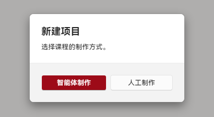
完成标志出现空白工程，进入「音频」步骤。
2绑定音频
在「音频」步骤点「选择音频」，选中 MP3、M4A 或 WAV。音频会复制到工程目录，之后可以随时退出再继续。已有字幕时可直接点「导入 SRT」。
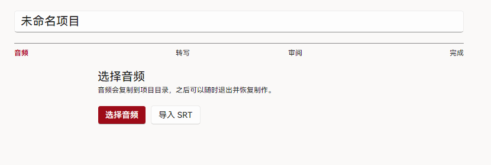
完成标志工程显示已绑定音频，进度进入「转写」。
3生成或导入字幕
点「开始转写」把任务加入队列，或用「导入 SRT」载入已有字幕。转写完成后回到工程，点击「载入字幕」。
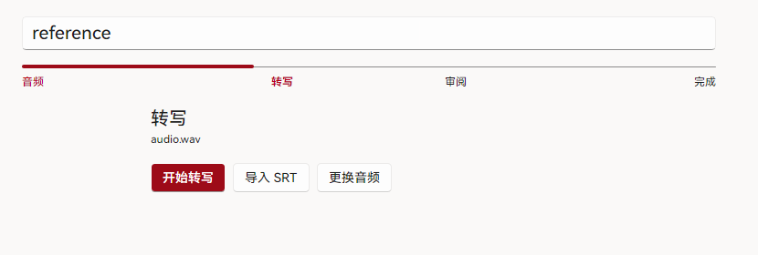
完成标志出现逐句字幕与时间轴。
4校对原句与题目
播放音频，逐句修正文字和时间点，必要时合并或拆分句子。用「选择整段」把句子归入材料，填写题号、题干、选项和答案，并绑定音频区间；「题目总览」可以一次检查所有小题。
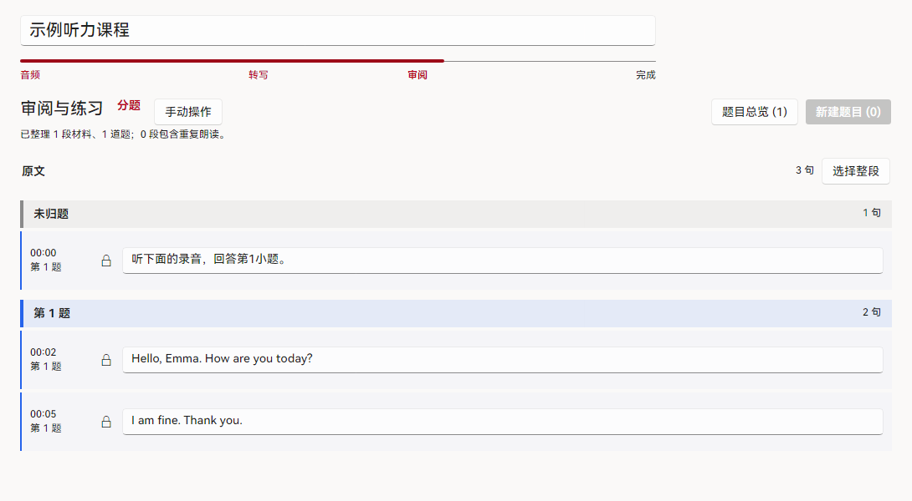
完成标志题目、答案与对应句子核对完成，底部点「保存」。
5设置挖空
点「下一步：设置挖空」进入挖空编辑。点击英文单词把它设为挖空，标点不参与分词；同一材料的重复朗读区间会同步对应挖空。
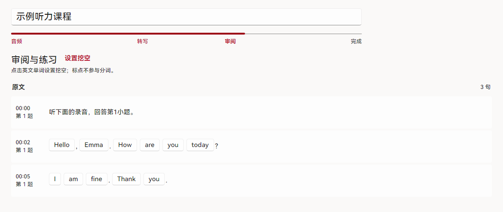
完成标志目标词以挖空状态显示。
6保存并交付
确认内容后点右下角「保存」。保存成功后，底部出现「导出为精听包」与「添加到播放」；继续编辑后需要再次保存，导出按钮才会重新出现。
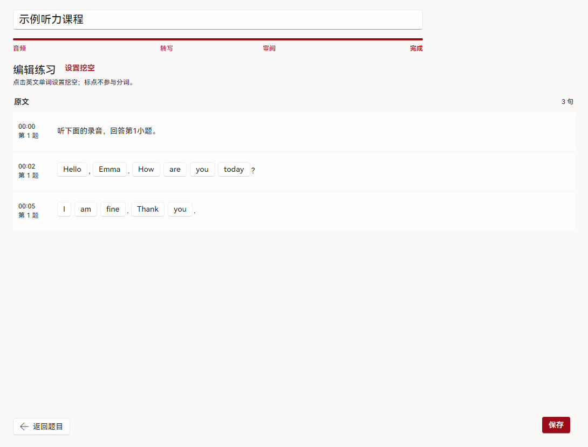
完成标志取得可分享的 .ilp 文件，或在本机课程列表中看到它。
智能体制课
应用负责保存和审阅工程；材料读取与整理由电脑上的智能体完成。教师在应用中决定接管授权和最终交付。
1选择「智能体制作」
「新建项目」对话框里选择「智能体制作」，按提示选择音频、填写课程标题，并按需加入多份试卷、听力原文或答案。材料推荐 DOCX 或文字版 PDF。
完成标志页面列出音频、标题和所选材料。
2打开 MCP 并复制配置
在「设置 → 制作与智能体」打开 MCP，展开后点「复制 MCP 配置」，粘贴到支持 HTTP MCP 的智能体客户端（例如 WorkBuddy）；再点「复制操作提示」发给智能体。实际模型在客户端中选择。
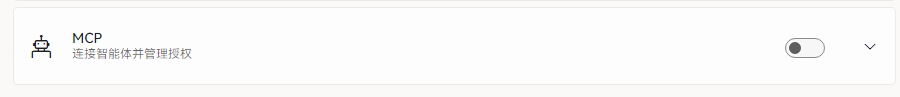
完成标志客户端连接应用并开始读取制作说明。
3确认接管并查看进度
智能体首次申请接管时，应用显示它的名称和 60 秒审批；确认后才开始操作。应用内显示当前步骤、详情和百分比，转写与资料提取可以并行。随时可以在设置里撤销授权或删除注册。
完成标志应用显示当前智能体、制作步骤和进度。
4审阅并保存
智能体交还应用后，打开工程检查每道题与字幕，必要时手动修改。确认后点「保存」，再选择「导出为精听包」或「添加到播放」。
完成标志课程成为可练习的 .ilp 或本机课程。
逐句精听
从教师处取得 .ilp 后即可开始。也可以打开普通音频播放；题目和挖空练习来自精听包。
1导入课程
打开应用，点「导入精听包或音频」选择 .ilp。导过的课程会出现在「最近课程」，下次直接点开。Windows 关联文件后也可以双击课程包。
2按题或按句定位
左侧是题目和选项，右侧是逐句时间轴。使用「上一题／下一题」跳题，「上一句／下一句」逐句移动，也可以直接点句子；当前句会高亮。
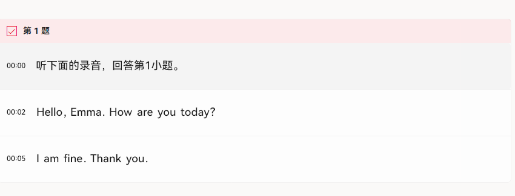
3循环、盲听与核对
勾选「单句循环」反复听当前句；勾选「隐藏字幕」做盲听。听到不确定的地方可以「重复本句」，或点「显示本段挖空」「显示全部挖空」核对拼写。
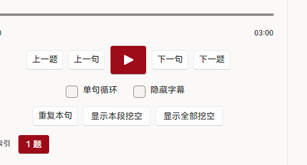
4接着上次继续
应用会保存每门课程的练习进度，下次打开时从上次位置继续。字幕字号与是否跳过题前提示在「设置 → 播放」里调整。
设置与按键
设置按分类排列：外观与字体、播放、制作与智能体、数据与维护、隐私、更新、组织管理、关于。
- 外观与字体
- 选择系统字体和字重，预览文字即时更新；需要时点「恢复默认」。播放页字幕字号在「播放」分类中调整。
- 扩展按键
- 在「设置 → 播放 → 扩展按键」给播放／暂停、上一句／下一句、上一题／下一题、重听当前句和字幕显隐录入单键。PageUp、PageDown 适合翻页笔；按键只在应用前台的播放页生效。
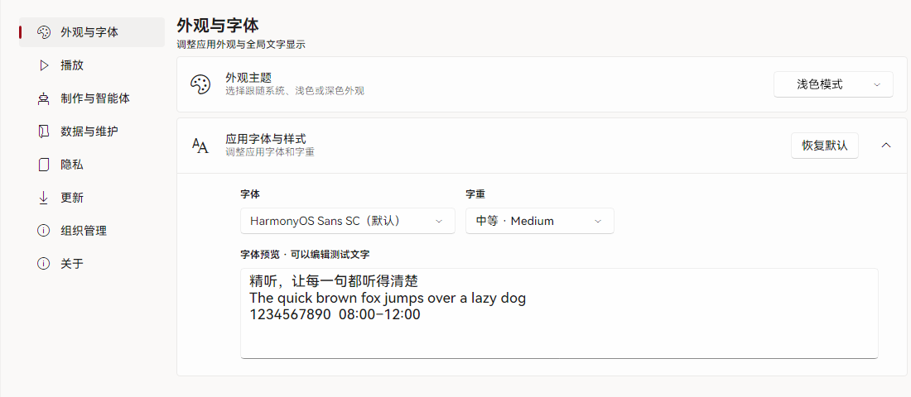
常见问题
转写提示 API 未配置
按百炼配置步骤核对地址、模型和 Key，保存后重试。已有与音频对应的 SRT 时，可直接导入字幕。
点了「保存」，还是看不到「导出为精听包」
保存成功后底部才会出现导出与「添加到播放」；如果之后又改了字幕或题目，需要再保存一次。工程状态显示「已完成」时才可以交付。
智能体无法开始制课
确认 MCP 已启用，客户端使用应用复制的配置，并已发送操作提示。首次接管还需要在应用内批准；授权状态可在 MCP 设置中查看。
macOS 首次打开受到系统拦截
当前 DMG 采用 ad-hoc 签名。尝试打开应用后，在「系统设置 → 隐私与安全性」找到「仍要打开」，按系统提示确认。请从本网站或正式版 Release获取安装包；操作路径参见Apple 官方说明。